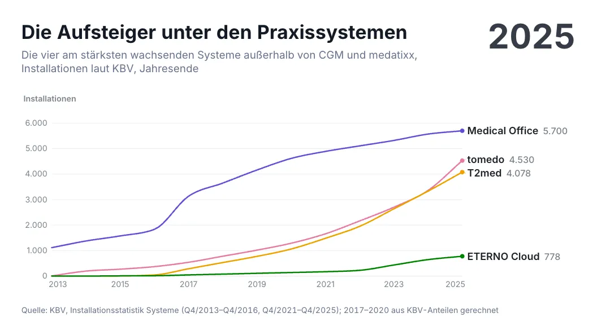
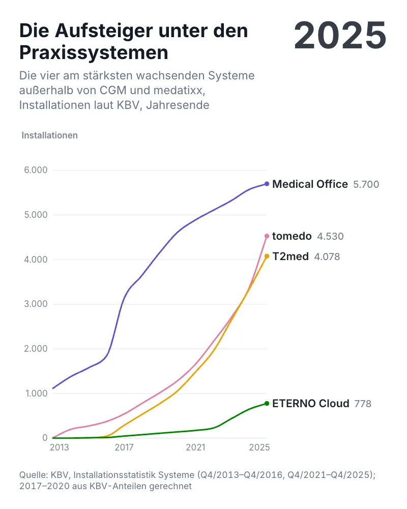

Praxissoftware-Aufsteiger: tomedo, T2med und Co.
Am stärksten wachsen Praxissysteme, die nicht nur unter Windows laufen: tomedo hatte Ende 2025 4.530 Installationen in der Statistik der Kassenärztlichen Bundesvereinigung (KBV), T2med 4.078. Ende 2013 waren es 7 und 0. Im Jahr 2025 allein wuchs tomedo um 34,8 Prozent und T2med um 22,4 Prozent, während CGM MEDISTAR 7,3 Prozent und CGM TURBOMED 11,3 Prozent verloren.


Das Wichtigste in Kürze
- tomedo (Zollsoft, läuft auf dem Mac): 7 Installationen Ende 2013, 4.530 Ende 2025, Platz 6 der ärztlichen Systeme. Plus 1.170 allein im Jahr 2025.
- T2med (Windows, macOS und Linux): Markteinführung 2015, Ende 2025 4.078 Installationen, Platz 7. Plus 746 im Jahr 2025.
- ETERNO Cloud (früher inSuite, im Browser): 1 Installation Ende 2014, 778 Ende 2025.
- Medical Office (INDAMED, Windows): von 1.115 (2013) auf 5.700 (2025), Platz 5. Seit 2021 wächst es nur noch langsam, 2025 um 2,3 Prozent.
Wer die Aufsteiger sind
tomedo stammt von Zollsoft aus Jena, das 2011 gegründet wurde und Mitte 2013 die KBV-Zulassung erhielt. Das System läuft nativ auf dem Mac, der Praxisserver ist ebenfalls ein Mac. T2med wurde 2012 gegründet, von einem früheren Geschäftsführer von TurboMed, und ist seit 2015 auf dem Markt; es läuft unter Windows, macOS und Linux und bietet eine dokumentierte FHIR-Schnittstelle mit Partnerprogramm. ETERNO Cloud (Doc Cirrus) läuft im Browser.
Gemeinsam ist den drei Neuen, dass sie nicht aus einer der großen Gruppen kommen und von Anfang an nicht allein auf Windows gesetzt haben: auf den Mac, auf mehrere Betriebssysteme oder auf den Browser. Medical Office ist älter (INDAMED wurde 1994 gegründet) und läuft unter Windows; es wuchs vor allem bis 2021. Am stärksten sind die Aufsteiger bei den Allgemeinmedizinern: Dort steht T2med auf Platz 4, siehe Praxissoftware der Allgemeinmediziner.
Was die Zahl nicht sagt
- Installationen sind keine Praxen. Die KBV zählt Abrechnungen mit der Prüfnummer eines Systems. Wie groß die Praxen hinter den Installationen sind, sagt die Zahl nicht.
- Wachstum ist nicht gleich Wechsel. Die KBV zeigt nur, wie viele Installationen ein System hat, nicht, von welchem System eine Praxis kam. Neue Installationen können auch aus Neugründungen stammen; wie viele, ist nicht bekannt. Salden je System seit 2021 zeigt Gewinner und Verlierer.
- Medical Office 2017 ist unsicher. Laut KBV-Anteil sprang Medical Office von 1.832 Installationen Ende 2016 auf rund 3.000 im Herbst 2017. Für 2021 hat die KBV Medical Office nachweislich doppelt gezählt und korrigiert; ob 2017 bis 2020 betroffen sind, ist offen.
Gerechnet
Für 2017 bis 2020 hat die KBV nur Anteile in Prozent veröffentlicht; diese Jahre sind aus den Anteilen bzw. linear gerechnet. Für ETERNO Cloud ist der erste Beleg (Ende 2014) für 2013 gehalten. Die Quartalswerte 2025 sind alle belegt. Methode je Wert in der Datenherkunft.
Quelle und Methode
Kassenärztliche Bundesvereinigung, Installationsstatistiken der Praxisverwaltungssysteme, Jahresenden 2013 bis 2016 und 2021 bis 2025 sowie die Quartale 2025; Betriebssysteme laut KBV-Zulassungsverzeichnissen; Firmengeschichte nach Herstellerangaben. Abgerufen am 20. bis 22. Oktober 2026. Den Gesamtmarkt zeigt Welche Praxissoftware Arztpraxen nutzen, die Hersteller CGM, medatixx und die Neuen.
Häufige Fragen
Welche Praxissoftware wächst am stärksten?
tomedo und T2med: Im Jahr 2025 kamen 1.170 bzw. 746 Installationen dazu, plus 34,8 und 22,4 Prozent. Unter den großen Systemen verlieren CGM MEDISTAR, CGM TURBOMED und CGM ALBIS.
Gibt es Praxissoftware für den Mac?
Ja. tomedo läuft nativ auf dem Mac, T2med unter Windows, macOS und Linux, ETERNO Cloud im Browser. Zusammen hatten sie Ende 2025 9.386 Installationen in der KBV-Statistik.
Wie groß ist Medical Office?
Ende 2025 hatte Medical Office (INDAMED) 5.700 Installationen, Platz 5 unter den Systemen für ärztliche Praxen.